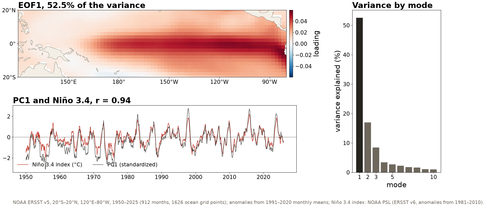

Session 13 · Wed Oct 28 · Book section 2.12
🌀
A monthly map of the tropical Pacific has 1,626 values; 76 years give only 912 maps.
How many dimensions does a dataset really have?
Reading: 2.12 Dimensionality reduction · clustering (3.3), which uses PCA, starts later in the same session.
| Dataset | One data sample | D | N | N / D | Size |
|---|---|---|---|---|---|
| Rock survey (synthetic) | one rock: 9 properties | 9 | 10,000 | 1,111 | 0.7 MB |
| GNSS station P395 | one day: east, north, up | 3 | 7,496 | 2,499 | 0.2 MB |
| STEAD earthquakes | 3 components × 6,000 times | 18,000 | ~1.2 M | ~67 | ~86 GB |
| ERSST tropical Pacific | one monthly SST map | 1,626 | 912 | 0.56 | 5.9 MB |
| ERA5, one variable | 0.25° global state, 13 levels | 13.5 M | ~95,000 | 0.007 | ~5 TB |
D: numbers per sample. N: number of samples. Size in bytes (4-byte array values, 8-byte table values). Array rank (1D, 2D, 3D) is the shape, not the dimension.
The tropical Pacific record has 912 maps for 1,626 grid points: 0.56 samples per dimension.
🛰️ Satellite & airborne 🌊 Ocean 🌡️ Atmospheric & climate science

Three modes carry 78% of the variance of 1,626 grid points; the first is El Niño, and its time series correlates with the Niño 3.4 index at r = 0.94.
Principal components are orthogonal directions ordered by the variance they carry; a map of each direction is an EOF, and its time series is the principal component.
Intrinsic dimension: the number of directions that carry most of the variance
Why it matters for learning
Report the number of components and the share of variance they keep, as you would report a filter’s cutoff.
A t-SNE map suggests groups; clustering, next, is how we test whether the groups exist in the data themselves.
pixi run jupyter lab → 2.12_dimensionality_reduction.ipynbESS 469/569 · Machine Learning in the Geosciences · Autumn 2026